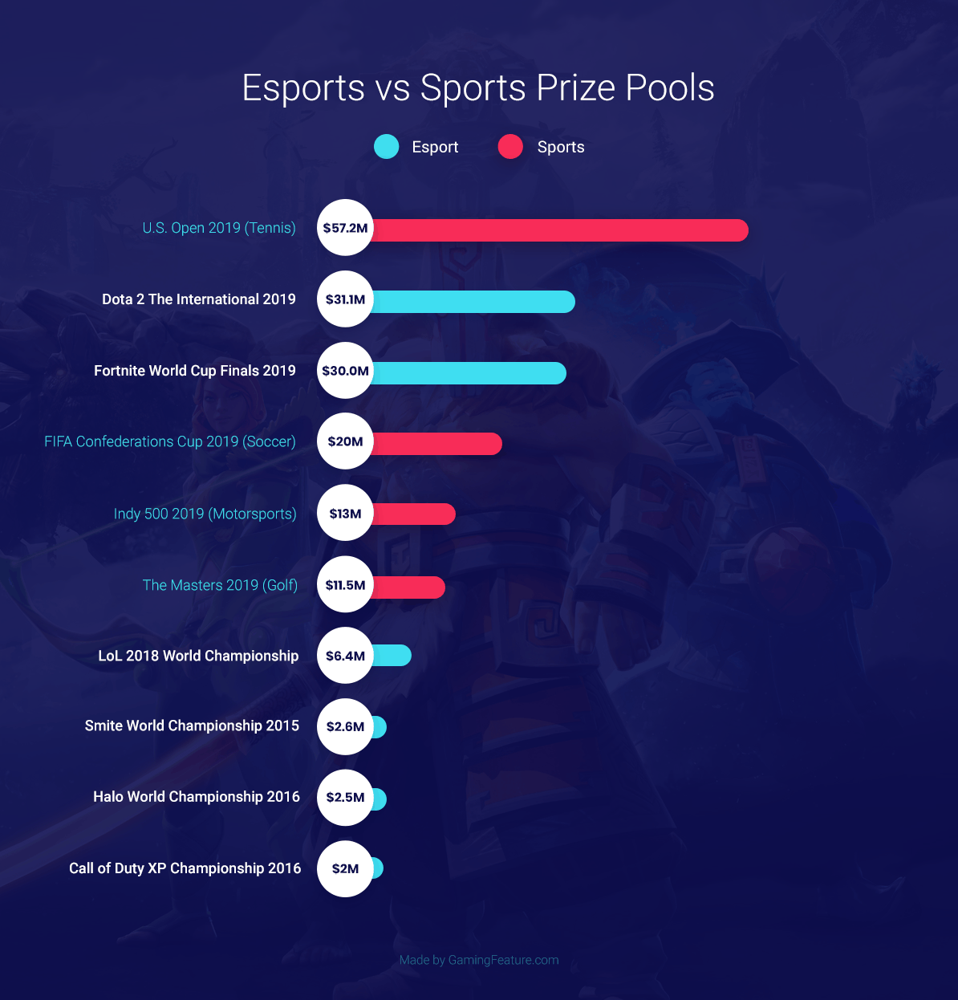

Assignment 1
The aim of this assignment is to give you practice working with this Jupyter environment and writing Markdown.
This exercise is also intended to start you thinking about what you might like to work on for a project. (I will not hold you to any project ideas written here; you are welcome to change your mind later.)
Notes
- There are many guides out there on how to use markdown syntax. The following is one example you may find useful:
- In this assignment notebook, you will find that you are unable to alter the content of the cells that I have written -> this is on purpose. However, you will be able to edit and run all response cells.
- After writing your responses in markdown, execute the cells so that your markdown text gets rendered.
Initial step:
Open the cell below in edit mode (by double-clicking on it), look at how it is written, and then run it. Make sure you understand how the text is marked up to get the header style, italics, bold, and a bulleted list.
(double-click here to edit)
First example
This is one example of a cell that is written using markdown syntax.
It uses: * ‘#’ for a header * ‘’ for italics ’**’ for bold
Personal Profile:
Use markdown in the cell below to write a personal profile.
This should include: 1. your name, styled as an H1 header (see for example the above cheatsheet) 2. your major in bold font 3. your year in school in italics 4. a description of why you are interested in the course, in normal font.
Ted Yarmoski
Computer Science
4th Year
I am interested in the course because I wanted to improve my Python skills. While I have done some programming in Python, I have not really touched any of the data science-related libraries.
Data and viz of interest
- Find a journal or newspaper article that relates data science to a humanities topic that you are interested in.
- Post a link to the article in the next cell and comment on why it interests you.
- Find a data visualization that you would love to know how to make with Python
- Include the image in the next cell too and comment on why you like it.
- https://fortunly.com/statistics/video-game-industry-statistics/
- I love playing video games and these stats interested me. I didn’t know that 85% of game revenue comes from free-to-play games!
- Comparative bar charts are very useful. It would be great if I could make these quickly. 
Ideas for data to investigate
In the cell below: 1. Write a bulleted list of 2 or 3 humanities topics of interest to you. 2. Review the schedule on the syllabus, and write down the topic/activity/library/concept that most appeals to you, and why 3. Do a quick search for data and/or articles related to those topics from #1 and #2, and write down a list of links to your search results.
- War history
- Geography
- Web Scraping is appealing to me since it seems very useful for any future projects where I may have to pull data directly from the internet.
- https://ourworldindata.org/war-and-peace
- Really great piece with lots of visualizations
- https://www.naturalearthdata.com/features/
Ideas from curated datasets & project lists
Review the projects and datasets on the following two pages: * https://miriamposner.com/classes/dh201w21/final-project/datasets * https://archive.ics.uci.edu/ml/datasets.php
Make a table in the cell below that includes columns for (1) the name of any dataset of interest, (2) a brief description of the data and how you might investigate it in a project, and (3) a link to the data.
There is no restriction on number of datasets to include, but please include at least two.
| Name | Description | Link |
|---|---|---|
| Deaths in US jails | Data on deaths in US jails by state. Includes whether inmates were awaiting trial and other attributes. May investigate by finding trends by state. | https://www.reuters.com/investigates/special-report/usa-jails-graphic/ |
| What people had in their houses in the 1700s in rural Pennsylvania | Data on possesions of people in the 1700s in Pennsylvania. Investigate differences in culture change over time and attribution to male or female as home v.s. work objects based on contemporary cultural norms of the data collectors. | https://repository.upenn.edu/mead/26/ |
Submit
Submit this assignment by: 1. Saving your work 2. Clicking on the Submit button at the top